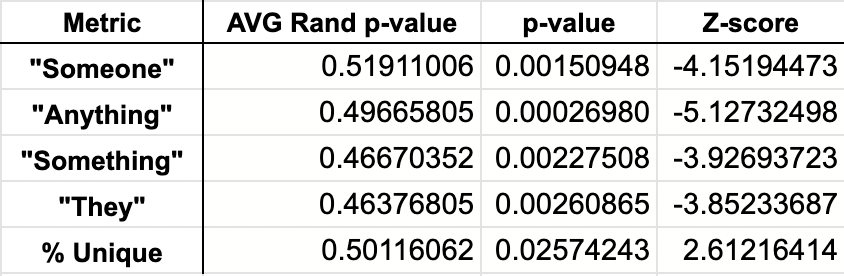
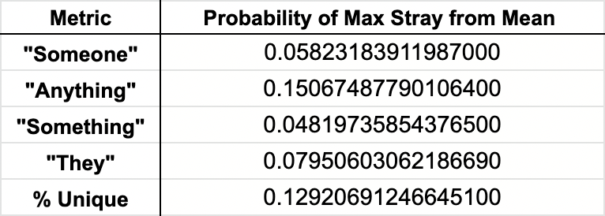

The style of Agatha Christie's writing changed significantly after 1960 which can be seen in her use of indefinite pronouns and her overall range of vocabulary. This is theorized to be a result of cognitive decline possibly assoicated with dementia.
The null hypothesis states that the frequency of indefinite words and unique vocabulary in Agatha Christie novels does not significantly change from 1920-1975. Three probability measures are used to substantiate claims on the data: One-Sample t-test, Z-score, and Chebyshev's inequality.
Observations on word choice in Agatha Christie novels are taken to be independent observations, as general writing style is involved in the null hypothesis and the occurence of words do not impact the probability of occurence in another book past the influence of writing style.
Objective is to test the expected value of a sample mean of independent observations is close to the true population mean, and use Z-Scores to meausure how many standard deviations the sample mean lies away from the population mean.

Attempting to bound the fraction of values that are a certain distance from the mean by bounding the probability that a sample from random variable X differs from the population mean. Set k to measure and report the probability of drawing the maximal data point in the metric.
